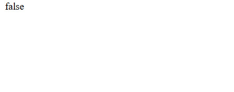

<!DOCTYPE html>
<html lang="en">
<head>
<meta charset="UTF-8">
<title>Identifying Gaps | Saint Matthew Project</title>

<style>
body{
    margin:0;
    font-family: 'Segoe UI', Tahoma, Geneva, Verdana, sans-serif;
    background:#fafafa;
    color:#222;
    line-height:1.7;
}

header{
    background:#1b1b1b;
    color:white;
    text-align:center;
    padding:35px 20px;
    border-bottom:3px solid #c9a227;
}

header h1{
    margin:0;
    font-size:28px;
}

header p{
    margin-top:6px;
    color:#ccc;
}

nav{
    background:#222;
    display:flex;
    justify-content:center;
    flex-wrap:wrap;
}

nav a{
    color:white;
    text-decoration:none;
    padding:12px 16px;
}

nav a:hover{
    background:#c9a227;
    color:#111;
}

.container{
    max-width:950px;
    margin:40px auto;
    background:white;
    padding:35px;
    border-radius:12px;
    box-shadow:0 6px 25px rgba(0,0,0,0.08);
    border-left:5px solid #c9a227;
}

pre{
    background:#0f0f0f;
    color:#f1f1f1;
    padding:15px;
    overflow-x:auto;
    border-radius:10px;
    font-size:13px;
}

h2{
    margin-top:30px;
}

footer{
    text-align:center;
    padding:20px;
    margin-top:40px;
    background:#1b1b1b;
    color:#ccc;
    border-top:3px solid #c9a227;
}

.expl{
    background:#f8f8f8;
    border-left:4px solid #c9a227;
    padding:15px 20px;
    margin:20px 0;
    border-radius:8px;
}

.expl h3{
    margin-top:0;
    color:#1b1b1b;
}

.expl code{
    background:#ececec;
    padding:2px 5px;
    border-radius:4px;
    font-family:Consolas, monospace;
}

.query-img{
    display:block;
    width:100%;
    max-width:650px;
    margin:20px auto;
    border-radius:10px;
    box-shadow:0 8px 20px rgba(0,0,0,0.15);
}
</style>

<header>
<h1>Identifying Gaps</h1>
<p>SPARQL Analysis — Saint Matthew Project</p>
</header>

<nav>
<a href="index.html">Home</a>
<a href="sparql.html">SPARQL</a>
<a href="gaps.html">Identifying Gaps</a>
<a href="llm.html">LLM Analysis</a>
<a href="rdf.html">RDF Triples</a>
<a href="challenges.html">Challenges</a>
<a href="conclusion.html">Concluision</a>
</nav>

<div class="container">

<h2>1. Identification of the First Gap</h2>

<p>
After the analysis performed in Query 4, we investigated whether the cultural property
“Vocazione di S. Matteo” (Caravaggio) includes any semantic information related to its commissioning.
In cultural heritage datasets, commissioning information is important because it identifies the entity responsible for funding or ordering the artwork.
</p>

<p>
The aim of this step was to verify whether such a relation is explicitly represented in the ArCo knowledge graph.
</p>

<div class="expl">

<h3>Methodology</h3>

<p>
To test the presence of commissioning data, we used an ASK SPARQL query, which checks whether a triple exists without returning results.
We specifically searched for the predicate <code>a-cd:hasCommittent</code>.
</p>

</div>

<h3>SPARQL Query (ASK)</h3>

<pre>
PREFIX a-cd: <https://w3id.org/arco/ontology/context-description/>
PREFIX arco: <https://w3id.org/arco/ontology/arco/>
PREFIX rdfs: <http://www.w3.org/2000/01/rdf-schema#>

ASK WHERE {
<https://w3id.org/arco/resource/HistoricOrArtisticProperty/1200705423>
a-cd:hasCommittent ?committent .
}
</pre>



<h3>Result</h3>

<p>
The query returned <b>false</b>.
</p>

<p>
This confirms the absence of commissioning-related relations in the dataset, indicating that the commissioning context is not explicitly modeled for this cultural property.
</p>

</div>

<footer>
SPARQL Analysis | KE4H Project © 2026
</footer>

</body>
</html>
